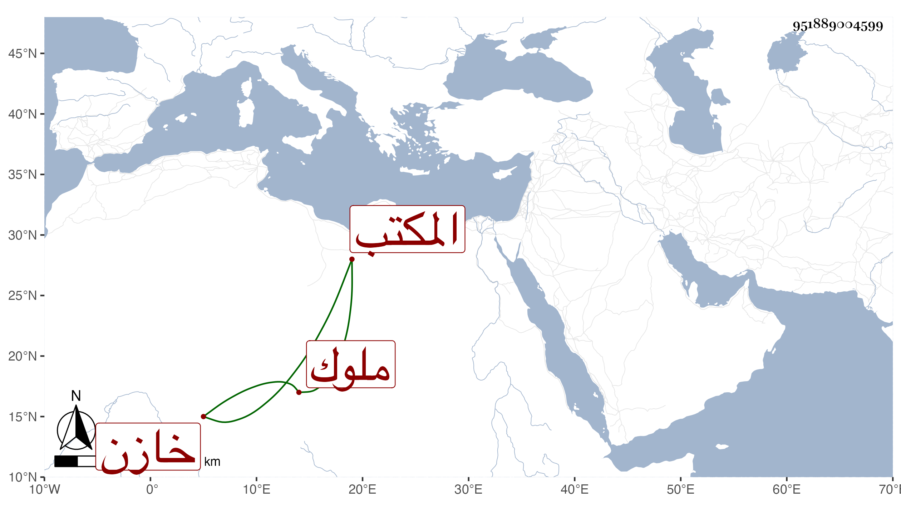

0902Sakhawi.DawLamic.ITO20230111-ara1.EIS1600.951889004599
Biography ID: 951889004599
ابن سعد الدين ملوك الحبشة صير الدين علي بن سعد الدين أبي البركات محمد بن أحمد بن علي ثم أخوه منصور ثم أخوه الجمال محمد ويلقب سعد الدين ثم أخوه بدلاي ابن سعد الدين الغري كمال الدين محمد بن إبرهيم بن عبد الوهاب ابن سعد الدين المكتب خازن كتب الشيخونية هو محمد بن أبي السعود أحمد بن اسماعيل بن إبرهيم بن موسى .
